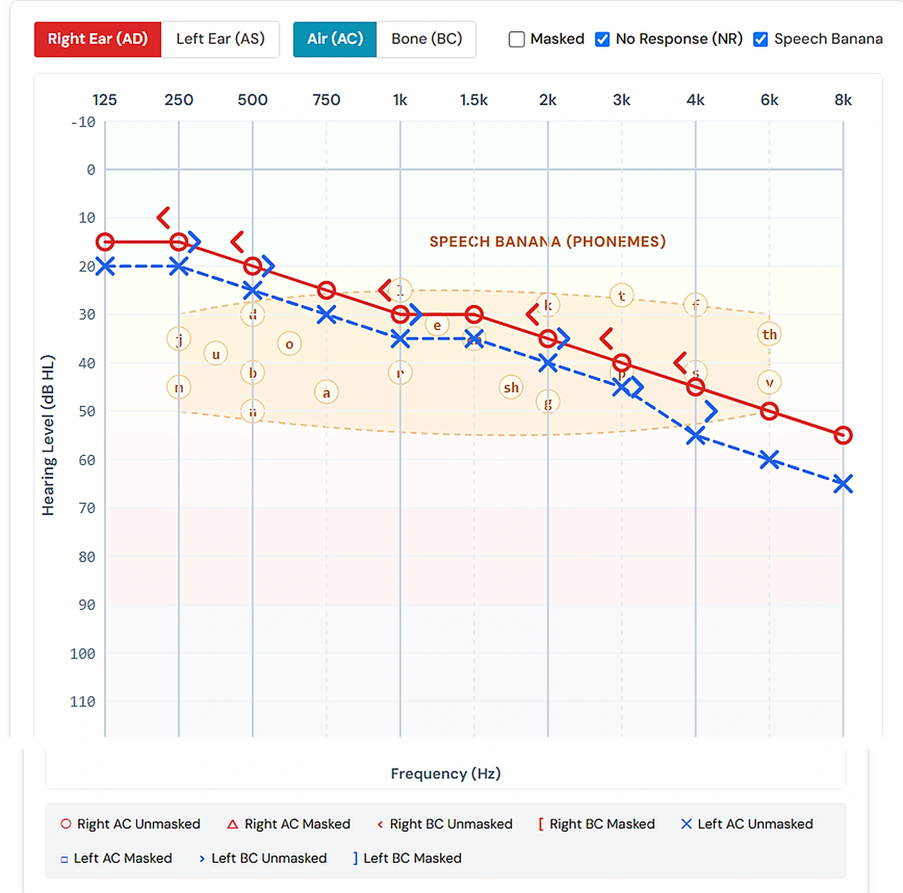
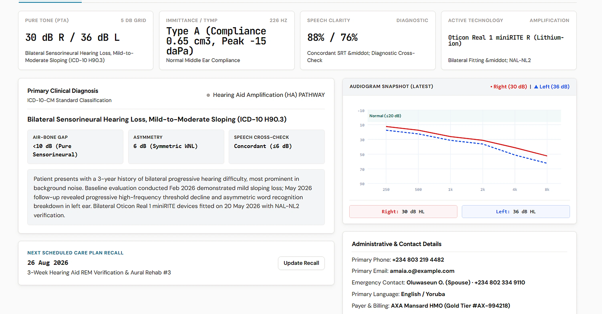

Clinical Practice Management
The clinical operating system for hearing healthcare.
Clinical PMS is a comprehensive practice management system purpose-built for hearing care providers. Structured clinical records, longitudinal patient history, and streamlined daily practice workflows.
Manage patient intake, diagnostic evaluations, clinical documentation, and longitudinal care plans in one focused platform.

Clinical Workspace
A complete clinical workspace for hearing care.
Every tool a hearing care specialist needs — patient management, diagnostic evaluations, clinical documentation, and practice administration — in a single, structured system built for clinical workflows.
Apply for PMS access
Diagnostic workspace — clinical threshold curves, bone conduction, and masking evaluations.
Longitudinal Tracking
Track patient hearing health across encounters over time.
Maintain complete clinical context across appointments. Review prior visits, monitor threshold shifts, and manage recall schedules with structured longitudinal patient records.
Apply for PMS access
Patient records — structured longitudinal history, appointment tracking, and encounter management.
Practice Capabilities
Built for clinical clarity and practice efficiency.
Clinical PMS brings patient history, diagnostic findings, and clinical documentation into a unified, structured workflow.
Structured Clinical Records
Organized hearing care records make patient findings easy to record, review, and navigate across every visit in a consistent, standardized format.
Longitudinal History
Keep full clinical context across months and years, making it straightforward to compare prior visits, track progression, and monitor changes over time.
Consistent Documentation
Standardized clinical notes, care plans, and diagnostic records ensure high quality and clear documentation throughout your practice.
Streamlined Practice Workflow
Manage patient intake, active clinical encounters, and follow-up care from a single, responsive interface built specifically for clinical teams.
Better Clinical Decisions
Comprehensive diagnostic records and organized history give practitioners the clear context needed for informed, confident clinical care.
Choose your practice pathway
Built around the way you work.
Apply for your independent practice, or on behalf of a healthcare facility. Each pathway asks for the evidence relevant to that practice.
Find your PMS pathwayStart with your practice
A clearer next step.
Apply as a solo practitioner or on behalf of your facility. Evidence is reviewed before access is activated.
Apply for PMS access